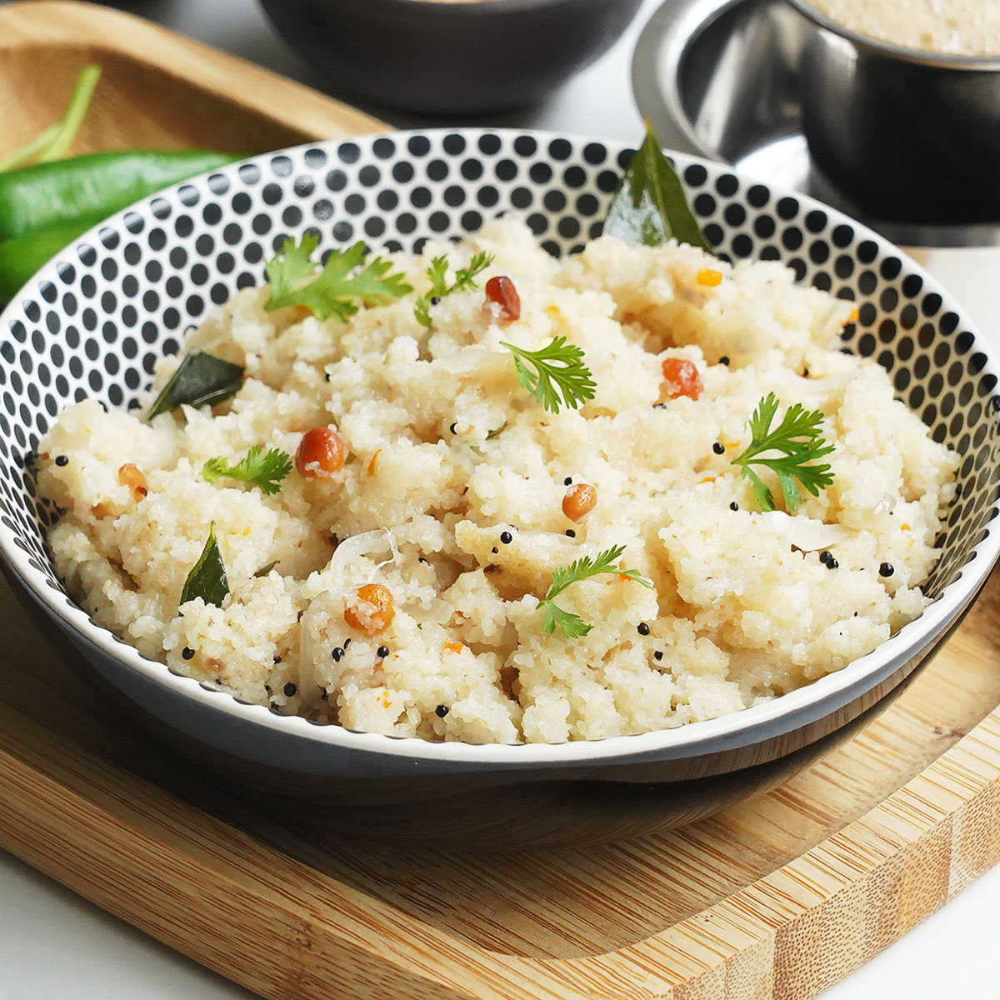

Upma Recipe

Description
In Andhra they call this upma 'Bombay rava' upma.
It is extremely soft and spongy in texture.
When I was a kid, I loved eating this upma as balls rolled in sugar.
This upma makes an excellent accompaniment to pesarattu.
Upma, uppumavu, or uppittu is a dish of thick porridge from dry-roasted
semolina or coarse rice flour. Upma originated from Southern India,
is most common in Kerala, Andhra Pradesh, Tamil Nadu, Odisha,
Karnataka, Maharashtra and Telangana.
Ingredients
- ¼ cup cooking oil
- 2 dried red chile peppers, broken into pieces
- 2 tablespoons cashews
- 1 tablespoon skinned split black lentils (urad dal)
- 1 teaspoon split Bengal gram (chana dal)
- 1 teaspoon mustard seed
- 1 pinch asafoetida powder
- 1 cup chopped onion
- 3 green chile peppers, sliced into thin rings
- 1 sprig fresh curry leaves
- 4 cups water
- 1 tomato, finely chopped
- 1 tablespoon minced fresh ginger root
- salt to taste
- 2 cups semolina (sooji rava)
- 3 tablespoons fresh lime juice, or to taste
- 2 tablespoons ghee (clarified butter)
Steps:
- Heat the oil in a large skillet over medium heat.
- Fry the dried red chile peppers, cashews, urad dal, chana dal,
and mustard seed in the hot oil until the cashews are golden brown,
about 5 minutes.
- Sprinkle the asafoetida powder into the skillet.
- Add the onion, green chile peppers, and curry leaves to the mixture
- cook and stir until the onions are softened, about 5 minutes.
- Pour the water into the skillet along with the tomato, ginger, and salt
- bring to a boil.
- Gradually pour the semolina into the mixture in a thin stream, stirring continually. This is very important.
- If you add the semolina too quickly, or do not stir quick enough, you will get lumps.
- Cook and stir until the mixture begins bubbling
- reduce heat to low, cover, and allow to cook 10 to 15 minutes.
- Stir the lime juice and ghee into the mixture.
- Remove from heat and allow to rest 10 minutes before serving.
Home